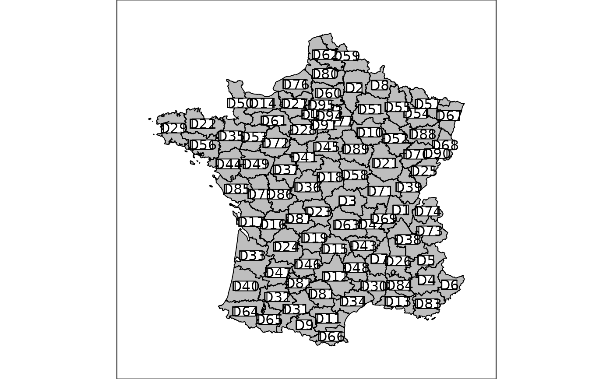

Mapping of a Spatial* object
s.Spatial.RdThis function represents a background map linked with data or not.
Usage
s.Spatial(spObj, col = TRUE, nclass = 5, scale = TRUE, plot = TRUE,
storeData = TRUE, pos = -1, ...)Arguments
- spObj
an object deriving from class
Spatial(packagesp)- col
a logical or a color to fill the background color of
spObj- nclass
if
spObjcontains data, the desired number of intervals splitting the data (usingpretty)- scale
a
logicalindicating if numeric variables should be scaled- plot
a logical indicating if the graphics is displayed
- storeData
a logical indicating if the data should be stored in the returned object. If
FALSE, only the names of the data arguments are stored- pos
an integer indicating the position of the environment where the data are stored, relative to the environment where the function is called. Useful only if
storeDataisFALSE- ...
additional graphical parameters (see
adegparandtrellis.par.get)
Value
An object of class ADEg (subclass S2.label) or ADEgS (if spObj contains more than one column ).
The result is displayed if plot is TRUE.
Author
Alice Julien-Laferriere, Aurelie Siberchicot aurelie.siberchicot@univ-lyon1.fr and Stephane Dray
Examples
data(elec88, package = "ade4")
## mapping without data
g1 <- s.Spatial(elec88$Spatial)

if (FALSE) { # \dontrun{
if(require(sp, quietly = TRUE)) {
## mapping with data
obj <- SpatialPolygonsDataFrame(Sr = elec88$Spatial, data = elec88$tab)
g2 <- s.Spatial(obj)
g3 <- s.Spatial(obj, nclass = 2, col = c("red", "blue"))
}
} # }